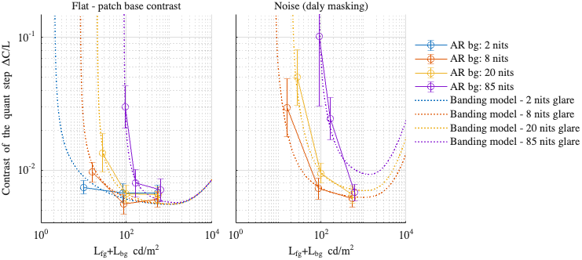
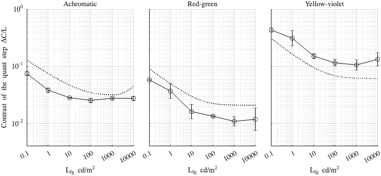

Fitting config: flat_vs_noise, model: daly_masking
Fitting error (RMSE): 0.232666
Model parameters
p.beta = 1.05829; p.beta_cc = 1; p.gs_num = [ 0.462195 0.2 0.965358 ]; p.noise_params = [ 0.226448 0.434877 0.444541 ]; p.dither_params.value = [ 2.48547 3.6854 5.3836 ];
Dataset: [ar2025]
Scaling factor: 0.794349

Dataset: [kim2020]
Scaling factor: 1.43004
